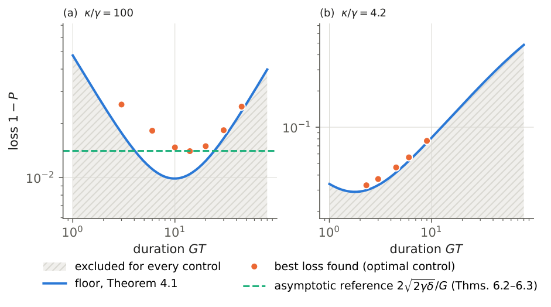
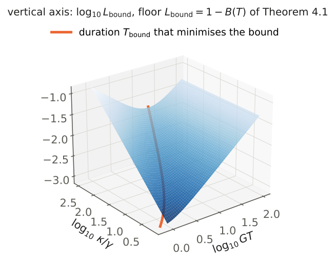
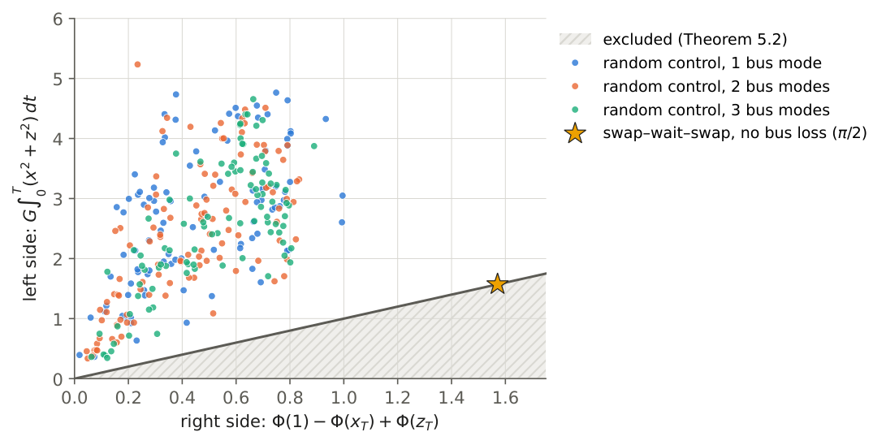
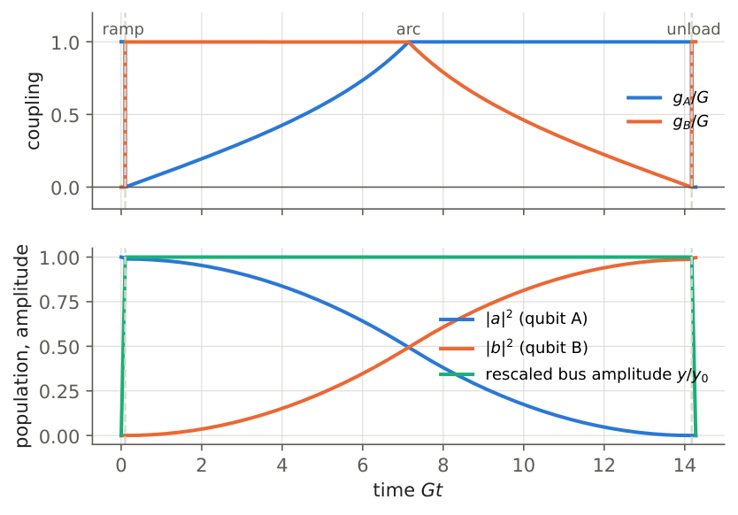

Quantum state transfer through a lossy bus: fundamental error limits for every control pulse, with application to IBM’s meter-scale interconnects
At a glance
What the paper contributes
A qubit hands its state to another qubit through a lossy bus (a resonator, a waveguide or a cable mode), with each coupler bounded by $G$. The paper gives error floors that hold for every control pulse, every duration and any number of bus modes, and applies them to IBM’s meter-scale interconnect.
- A floor at every duration (Theorem 4.1, Isabelle): $P(T)\le e^{-\gamma T}/[1+(\kappa-\gamma)/(G^2T)]$.
- The end qubits cannot be bypassed (Theorem 5.2, Isabelle): the excitation must sit in the end qubits for an integrated time whose lower bound tends to $\pi/(2G)$ for a complete transfer.
- The asymptotic constant (Theorems 6.2 and 6.3): the perturbative optimum $2\sqrt{2\gamma(\kappa-\gamma)}/G$ becomes a lower bound over all controls, and an explicit pulse attains it with explicit error terms.
- Dephasing and real devices (Section 7): the coherence with the vacuum is an amplitude with rates $2/T_2$; a version with a rate for each element gives the floor of a real device; reciprocity makes the direction irrelevant.
- IBM’s links (Section 8): floors $6.03$–$10.05\times10^{-4}$ on $1-F_B$, certified with ball arithmetic, against measured errors $11$–$16$ times larger; which hardware change lowers the floor; three other platforms.
The lab Check your link computes the floor of your own link with the same code as the paper’s tables.
🚀 Start here: Theorem 4.1: the loss floor: P(T) ≤ e^(−γT)/[1 + (κ−γ)/(G²T)] for every pulse and every duration.
Main results:
- Theorem 4.1: the loss floor: P(T) ≤ e^(−γT)/[1 + (κ−γ)/(G²T)] for every pulse and every duration
- Theorem 5.2: the end qubits must be occupied: G∫(x² + z²) ≥ [Φ(x₀) − Φ(x_T)] + [Φ(z_T) − Φ(z₀)], ≥ π/2 for a complete transfer
- Theorem 6.2: asymptotic floor: 1 − P ≥ 2√(2γδ)/G (1 − o(1)) over all controls
- Theorem 6.3: the constant is attained: ramp–arc–unload gives 1 − P ≤ ℓ₀[1/(1−α) + 1.5β]
- Lemma 7.1: coherence is an amplitude: same no-jump equations with rates 2/T₂; 1 − F_B = (1 − P)/6 + (1 − c)/3
- Proposition 7.2: windows with a rate per element: the floor of a real device (with f_A(T)² in the balance)
- Proposition 7.3: reciprocity: P_(B←A)[H] = P_(A←B)[Hᵣev], same coherence; the direction is not a design choice
- Remark Lab: 🔬 Check your link — the lab: the floor of YOUR link, a pulse, a verdict on your measurement, what to improve
🗺️ Map of the results (click a box to go to it)
Dependencies in the written proof: an arrow A → B means that this proof of B uses A. Every result rests on its written proof; the tags record what was checked besides, and each statement's “Evidence & scope” block says how far. The colour of a box is its strongest tag, in the order above; the tags in the box give the rest. Boxes with a thick border are the main results; click a box to read the statement.
📐 Setting (copied from the paper, §3)
One excitation; emitter qubit \(A\), receiver qubit \(B\), bus \(C\) with \(M\ge 1\) modes and an arbitrary Hermitian internal Hamiltonian \(H_C(t)\) (detunings allowed). The qubits couple to the bus through vectors \(g_A(t),g_B(t)\in \mathbb C^M\) with
each bounded separately (a “box”). The hypotheses are: H1, pure loss at zero temperature: jumps take the excitation to the vacuum, which does not repopulate \(B\); qubits lose at rate \(\gamma \), bus modes at rates collected in \(K(t)\succeq \kappa \, \mathbb 1\). H2, no direct \(A\)–\(B\) coupling; no drive on \(B\). H3 (Section 7 only), Markovian dephasing: Lindblad operators \(\sqrt{1/T_{1,j}}\, |0\rangle \langle j|\) and \(\sqrt{2\gamma _{\varphi ,j}}\, |j\rangle \langle j|\) with \(\gamma _{\varphi ,j}=1/T_{2,j}-1/(2T_{1,j})\). H4 (Section 8 only), one effective bus mode with \(G=2\pi \times 9\) MHz. \(G\) bounds the norm of the coupling vector, so a multimode bus with a per-mode bound of 9 MHz is a different constraint. Under H1–H2 the population in \(B\) is given exactly by the no-jump evolution of the unnormalised amplitudes \(a(t)\), \(c(t)\in \mathbb C^M\), \(b(t)\):
with \(a(0)=1\), \(b(0)=0\), \(c(0)=0\), and \(P(T)=|b(T)|^2\).
Rescaled frame. When \(\kappa \ge \gamma \), put \(\tilde a=e^{\gamma t/2}a\), \(\tilde c=e^{\gamma t/2}c\), \(\tilde b=e^{\gamma t/2}b\). The qubits become lossless and the bus keeps the loss \(K-\gamma \succeq \delta \, \mathbb 1\), \(\delta :=\kappa -\gamma \ge 0\). Write
From (2) and (1), almost everywhere,
The lower bounds of Sections 4–6 use only (3) and \(\tilde n(0)=1\); this is why the number of modes, the phases and \(H_C\) never enter. The Isabelle proofs start from (3): the step from (2) to (3) is done on paper.
What this blueprint shows.
The numbered statements of the paper, with their proofs, dependencies and what checked them, under the sections that hold them (with the paper’s numbers), and the figures and tables they use. The full text is in the PDF of the paper.
4 The floor
Under H1–H2 with \(\kappa \ge \gamma \), for every control satisfying (1) and every \(T{\gt}0\),
Isabelle · oursshow
loss_floor · Isabelle/AFP/Quantum_Speed_Limits/Relay_Loss_Floor.thy, line 75 — from the reduced inequalities (3), derivatives outside a countable set (piecewise-smooth controls)
theorem loss_floor:
fixes n y z n' z' :: "real \<Rightarrow> real" and G T \<delta> :: real and S :: "real set"
assumes T: "0 < T" and G: "0 < G" and d0: "0 \<le> \<delta>" and S: "countable S"
and nc: "continuous_on {0..T} n" and yc: "continuous_on {0..T} y" and zc: "continuous_on {0..T} z"
and y0: "\<forall>t\<in>{0..T}. 0 \<le> y t"
and n0: "n 0 \<le> 1" and z0: "z 0 = 0" and zT: "(z T)\<^sup>2 \<le> n T"
and der: "\<forall>t\<in>{0<..<T} - S. (n has_real_derivative n' t) (at t) \<and> (z has_real_derivative z' t) (at t)"
and bnd: "\<forall>t\<in>{0<..<T} - S. n' t \<le> - \<delta> * (y t)\<^sup>2 \<and> \<bar>z' t\<bar> \<le> G * y t"
shows "(z T)\<^sup>2 * (1 + \<delta> / (G\<^sup>2 * T)) \<le> 1"🆕 Classical and new: the paper found no earlier statement for finite T, lossy qubits, separately bounded couplings and any number of modes (§9); the norm balance itself is classical (Gorshkov et al. 2007), and Hughes, Goodwin and Horak 2024 is closest in method for a different task.
↳ Used in: Lemma 6.1, Theorem 6.2
By (3), \(\tilde P\le \tilde n(T)\le 1-\delta \tilde I\). Since \(z(0)=0\) and \(|\dot z|\le Gy\), \(\sqrt{\tilde P}=z(T)\le G\int _0^Ty\le G\sqrt{T\tilde I}\) by Cauchy–Schwarz, so \(\tilde I\ge \tilde P/(G^2T)\). Hence \(\tilde P\, (1+\delta /(G^2T))\le 1\), and \(P=e^{-\gamma T}\tilde P\).
💡 In plain words (commentary, not part of the paper)
A transfer has two ways to lose the excitation. If it goes slowly, the qubits decay: that is the factor \(e^{-\gamma T}\). If it goes fast, the excitation must pass through the bus, and the bus loses more: with couplers of strength \(G\), moving the excitation in time \(T\) forces the bus to hold it for an integrated time of at least \(\tilde P/(G^2T)\) (Cauchy–Schwarz), and the bus loses at the excess rate \(\kappa -\gamma \) while it holds it. No pulse escapes both. The bound holds for every shape, phase and duration and for any number of bus modes, because the proof only uses the three inequalities (3) of the Setting. For the loss ratio of an IBM link (\(\kappa /\gamma =4.2\)) the best pulses found by optimal control lie within \(4\)–\(12\% \) of it (Figure 1). Machine-checked in Isabelle (loss_floor), for derivatives outside a countable set.
🛡️ Evidence & scope
Program: the best loss found by optimal control lies above the floor in all twelve cases of Figure 1; within 4–12
Program: exact control of every IBM floor pipeline: with excess loss only in the bus the strengthened bound of Prop. 7.2 reduces to this theorem (9 cases, ratio 1.000000). scripts/mision_suelo_cli.py, scripts/misiones/
If in addition \(\| \dot g_i(t)\| \le S\) (Euclidean norm of the coupling vector) and \(g_i(0)=g_i(T)=0\), then \(\| g_i(t)\| \le m(t):=\min (St,S(T-t),G)\), and Cauchy–Schwarz with weight \(m\) gives (4) with \(G^2T\) replaced by \(J(T)=\int _0^Tm^2\) (\(S^2T^3/12\) for \(T\le 2G/S\), \(G^2T-4G^3/(3S)\) for \(T\ge 2G/S\)). With \(A=\pi /\sqrt2\), reparametrising time with \(s=\int _0^t m\) gives the minimal time \(2\sqrt{A/S}\) when \(S\le G^2/A\) (triangular envelope), \(A/G+G/S\) otherwise (trapezoidal), attained without losses by \(g_A=g_B=m\). (Proved on paper; not formalised.)
🆕 Classical and new: proved on paper in the paper; not formalised.
↳ Not used by another result of the paper.
🖼️ Figure 1

The floor of Theorem 4.1 against the duration, with \(G=1\). Hatched: losses that no control reaches. Orange: best losses found by optimal control (one mode, 40 piecewise-constant steps, 4 starts), not proven optima. (a) \(\gamma =5\times 10^{-4}\), \(\kappa =0.05\): the best loss found is \(44\)–\(63\% \) above the floor at short durations and approaches it at long ones; near \(T_{\rm asym}\) it reaches the asymptotic reference \(2\sqrt{2\gamma \delta }/G\) of Theorems 6.2–6.3 (dashed), a factor \(\sqrt2\) above the floor’s minimum; the point at \(GT=14\) lies \(0.3\% \) below it, which the asymptotic statement allows. (b) \(\gamma =0.00826\), \(\kappa =0.0347\) (\(\kappa /\gamma =4.2\), the ratio of IBM’s device): the floor is within \(4\)–\(12\% \) of the best loss found.
🖼️ Figure 2

The floor \(L_{\rm bound}=1-B(T)\) of Theorem 4.1 as a function of the duration \(GT\) and of the loss ratio \(\kappa /\gamma \), at \(\gamma /G=5\times 10^{-4}\) (logarithmic axes). Short transfers pay the bus loss, long ones the qubit loss; the orange curve marks the exact duration \(T_{\rm bound}\) that minimises the bound (Section ??).
5 The end qubits must be occupied
Let \(w\) be absolutely continuous and \(y\ge 0\) continuous on \([0,T]\), with \(w\ge 0\), \(w^2+y^2\le 1\), and \(|\dot w|\le G\, y\) outside a null set. Then \(|\Phi (w(T))-\Phi (w(0))|\le G\int _0^Tw^2\, dt\).
Isabelle · oursshow
endpoint_window_ac · Isabelle/AFP/Quantum_Speed_Limits/Relay_Endpoints.thy, line 402 — absolutely continuous w, exceptions in a null set (every measurable bounded control)
lemma endpoint_window_ac:
fixes w y w' :: "real \<Rightarrow> real" and G T :: real and S :: "real set"
assumes T: "0 < T" and G: "0 < G" and S: "negligible S"
and wac: "absolutely_continuous_on {0..T} w" and yc: "continuous_on {0..T} y"
and nrm: "\<forall>t\<in>{0..T}. 0 \<le> w t \<and> 0 \<le> y t \<and> (w t)\<^sup>2 + (y t)\<^sup>2 \<le> 1"
and der: "\<forall>t\<in>{0<..<T} - S. (w has_real_derivative w' t) (at t) \<and> \<bar>w' t\<bar> \<le> G * y t"
shows "\<bar>Phi (w T) - Phi (w 0)\<bar> \<le> G * integral {0..T} (\<lambda>t. (w t)\<^sup>2)"endpoint_window · Isabelle/AFP/Quantum_Speed_Limits/Relay_Endpoints.thy, line 233 — earlier version, exceptions in a countable set
lemma endpoint_window:
fixes w y w' :: "real \<Rightarrow> real" and G T :: real and S :: "real set"
assumes T: "0 < T" and G: "0 < G" and S: "countable S"
and wc: "continuous_on {0..T} w" and yc: "continuous_on {0..T} y"
and nrm: "\<forall>t\<in>{0..T}. 0 \<le> w t \<and> 0 \<le> y t \<and> (w t)\<^sup>2 + (y t)\<^sup>2 \<le> 1"
and der: "\<forall>t\<in>{0<..<T} - S. (w has_real_derivative w' t) (at t) \<and> \<bar>w' t\<bar> \<le> G * y t"
shows "\<bar>Phi (w T) - Phi (w 0)\<bar> \<le> G * integral {0..T} (\<lambda>t. (w t)\<^sup>2)"↳ Used in: Theorem 5.2, Proposition 7.2
Where \(w{\lt}1\), \(|\tfrac {d}{dt}\Phi (w)|=w^2|\dot w|/\sqrt{1-w^2}\le G\, w^2\, y/\sqrt{1-w^2}\le G\, w^2\), because \(y\le \sqrt{1-w^2}\). At \(w=1\) the derivative of \(\Phi \) does not exist, so apply the estimate to \(\Phi (\lambda w)\) with \(0{\lt}\lambda {\lt}1\): \(\Phi \) is Lipschitz on \([0,\lambda ]\), hence \(\Phi (\lambda w)\) is absolutely continuous, the fundamental theorem of calculus for absolutely continuous functions applies, and almost everywhere
Let \(\lambda \to 1\); \(\Phi \) is continuous at the end points.
Let \(x,z\) be absolutely continuous and \(y\) continuous on \([0,T]\), with \(x,y,z\ge 0\), \(x^2+y^2+z^2\le 1\) and \(|\dot x|,|\dot z|\le G\, y\) outside a null set. Then
In particular, for a complete transfer (\(x:1\to 0\), \(z:0\to 1\)) and every \(T\),
Isabelle · oursshow
endpoint_occupation_ac · Isabelle/AFP/Quantum_Speed_Limits/Relay_Endpoints.thy, line 545 — the complete-transfer form (x: 1 → 0, z: 0 → 1), absolutely continuous, null exceptional set; the general inequality is the window lemma applied twice
theorem endpoint_occupation_ac:
fixes x z y x' z' :: "real \<Rightarrow> real" and G T :: real and S :: "real set"
assumes T: "0 < T" and G: "0 < G" and S: "negligible S"
and xac: "absolutely_continuous_on {0..T} x" and zac: "absolutely_continuous_on {0..T} z" and yc: "continuous_on {0..T} y"
and nrm: "\<forall>t\<in>{0..T}. 0 \<le> x t \<and> 0 \<le> z t \<and> 0 \<le> y t \<and> (x t)\<^sup>2 + (y t)\<^sup>2 + (z t)\<^sup>2 \<le> 1"
and bd: "x 0 = 1" "x T = 0" "z 0 = 0" "z T = 1"
and der: "\<forall>t\<in>{0<..<T} - S. (x has_real_derivative x' t) (at t) \<and> (z has_real_derivative z' t) (at t)
\<and> \<bar>x' t\<bar> \<le> G * y t \<and> \<bar>z' t\<bar> \<le> G * y t"
shows "pi / 2 \<le> G * integral {0..T} (\<lambda>t. (x t)\<^sup>2 + (z t)\<^sup>2)"endpoint_occupation · Isabelle/AFP/Quantum_Speed_Limits/Relay_Endpoints.thy, line 356 — earlier version, exceptions in a countable set
theorem endpoint_occupation:
fixes x z y x' z' :: "real \<Rightarrow> real" and G T :: real and S :: "real set"
assumes T: "0 < T" and G: "0 < G" and S: "countable S"
and xc: "continuous_on {0..T} x" and zc: "continuous_on {0..T} z" and yc: "continuous_on {0..T} y"
and nrm: "\<forall>t\<in>{0..T}. 0 \<le> x t \<and> 0 \<le> z t \<and> 0 \<le> y t \<and> (x t)\<^sup>2 + (y t)\<^sup>2 + (z t)\<^sup>2 \<le> 1"
and bd: "x 0 = 1" "x T = 0" "z 0 = 0" "z T = 1"
and der: "\<forall>t\<in>{0<..<T} - S. (x has_real_derivative x' t) (at t) \<and> (z has_real_derivative z' t) (at t)
\<and> \<bar>x' t\<bar> \<le> G * y t \<and> \<bar>z' t\<bar> \<le> G * y t"
shows "pi / 2 \<le> G * integral {0..T} (\<lambda>t. (x t)\<^sup>2 + (z t)\<^sup>2)"🆕 Classical and new: the paper found no earlier statement (§9).
↳ Used in: Proposition 7.2
Apply Lemma 5.1 to \((x,y)\) and to \((z,y)\); \(x^2+y^2\le 1\) and \(z^2+y^2\le 1\) follow from the hypothesis.
💡 In plain words (commentary, not part of the paper)
Protocols such as STIRAP keep the bus nearly empty. This theorem is the other half of the picture: the excitation then has to sit in the end qubits. The function \(\Phi (u)=\tfrac 12(\arcsin u-u\sqrt{1-u^2})\) cannot change faster than \(G\) times the occupation \(u^2\), because the flow out of a qubit is at most \(G\) times the bus amplitude, which is at most \(\sqrt{1-u^2}\). Emptying \(A\) moves \(\Phi \) by \(\pi /4\) and filling \(B\) by \(\pi /4\) more, so a complete transfer keeps the excitation in the end qubits for an integrated time of at least \(\pi /(2G)\), however slowly or cleverly it is done. Swap–wait–swap without bus loss attains it. Machine-checked in Isabelle: the window lemma (endpoint_window_ac, every measurable bounded control) and the complete-transfer form (endpoint_occupation_ac); the general inequality is the lemma applied twice.
🛡️ Evidence & scope
Program: 300 random controls (1–3 modes, complex phases, losses): left side over right side at least 2.11. scripts/falsar_extremos.py, scripts/verificar_v201.py
Program: Φ(1) = π/4 and the swap value π/2 in exact arithmetic (Sage). scripts/certificado_sage.sage
🖼️ Figure 3

Theorem 5.2 on 300 random controls (piecewise-constant complex couplings with \(\| g\| \le G\), random bus Hamiltonian and losses, 1–3 bus modes; qubits lossless). Each point is one control: horizontal, the right side \(\Phi (1)-\Phi (x_T)+\Phi (z_T)\); vertical, the occupation \(G\int _0^T(x^2+z^2)\). The theorem excludes the hatched region. The star is swap–wait–swap without bus loss, a complete transfer that lies on the boundary at \(\pi /2\).
6 Partial transfer and the asymptotic constant
Under (3) with \(\tilde n(0)=1\), \(x(0)=1\), \(y(0)=z(0)=0\), let \(\tilde P=1-\varepsilon \) with \(\varepsilon \le 1/2\). There is \(y_c\in [0,1]\) with
Consequently \(G^2T\, \tilde I\ge \Psi (GT,\varepsilon )\), where
and \(\Psi (\tau ,\varepsilon )\to 2\) as \(\tau \to \infty \) and \(\varepsilon \to 0\).
Isabelle · oursshow
partial_frontier · Isabelle/AFP/Quantum_Speed_Limits/Relay_Loss_Floor.thy, line 233 — the two inequalities of the lemma from the reduced inequalities (countable exceptional set); Ψ and its limit on paper
theorem partial_frontier:
fixes x z p x' z' p' :: "real \<Rightarrow> real" and G T \<epsilon> :: real and S :: "real set"
assumes T: "0 < T" and G: "0 < G" and S: "countable S"
and cx: "continuous_on {0..T} x" and cz: "continuous_on {0..T} z" and cp: "continuous_on {0..T} p"
and D: "\<forall>t\<in>{0..T}. 0 \<le> x t \<and> 0 \<le> z t \<and> 0 \<le> p t \<and> (x t)\<^sup>2 + (z t)\<^sup>2 + p t \<le> 1"
and x0: "x 0 = 1" and z0: "z 0 = 0" and p0: "p 0 = 0"
and e0: "0 \<le> \<epsilon>" and e1: "\<epsilon> \<le> 1 / 2" and zT: "1 - \<epsilon> \<le> (z T)\<^sup>2"
and nT: "\<forall>t\<in>{0..T}. 1 - \<epsilon> \<le> (x t)\<^sup>2 + (z t)\<^sup>2 + p t"
and der: "\<forall>t\<in>{0<..<T} - S. (x has_real_derivative x' t) (at t) \<and> (z has_real_derivative z' t) (at t) \<and> (p has_real_derivative p' t) (at t)"
and bnd: "\<forall>t\<in>{0<..<T} - S. \<bar>x' t\<bar> \<le> G * sqrt (p t) \<and> \<bar>z' t\<bar> \<le> G * sqrt (p t) \<and> p' t \<le> 2 * sqrt 2 * G * sqrt (p t)"
shows "\<exists>yc\<in>{0..1}. (max 0 (sqrt (2 * (1 - \<epsilon> - yc\<^sup>2)) - sqrt \<epsilon>))\<^sup>2 \<le> G\<^sup>2 * T * integral {0..T} p
\<and> sqrt 2 / 6 * yc ^ 3 \<le> G * integral {0..T} p"↳ Used in: Theorem 6.2, 9.1
\(x(T)^2\le \tilde n(T)-z(T)^2\le \varepsilon \), so \(x(T)\le \sqrt\varepsilon \le \sqrt{1-\varepsilon }=z(T)\); hence \(x-z\) goes from \(1\) to \(\le 0\) and vanishes at some \(t_c\), where \(x=z=s\) and \(y=y_c\). There \(2s^2+y_c^2=\tilde n(t_c)\ge \tilde n(T)\ge 1-\varepsilon \). Then \(G\int _0^Ty\ge \int _0^{t_c}|\dot z|+\int _{t_c}^T|\dot x|\ge s+(s-x(T))\ge \sqrt{2(1-\varepsilon -y_c^2)_+}-\sqrt\varepsilon \), and Cauchy–Schwarz gives the first inequality. For the second, the coupling changes \(y^2\) at rate \(-2(x\dot x+z\dot z)\), of modulus at most \(2G\, y\, (x+z)\le 2\sqrt2\, G\, y\), and the bus loss only decreases it; so \(\dot y\le \sqrt2\, G\) where \(y{\gt}0\). As \(y(0)=0\), \(t_c\ge y_c/(\sqrt2G)\) and \(y(t)\ge y_c-\sqrt2G(t_c-t)\) on \([t_c-y_c/(\sqrt2G),t_c]\), whence \(\tilde I\ge y_c^3/(3\sqrt2\, G)\). The term \(1-\varepsilon \) is the step \(\tilde I\ge \tilde P/(G^2T)\) of Theorem 4.1. Finally, if \(\Psi {\lt}2-\eta \) then \(y\le (6(2-\eta )/(\sqrt2\tau ))^{1/3}\to 0\) and the middle term tends to \(2\), a contradiction for large \(\tau \) and small \(\varepsilon \).
🛡️ Evidence & scope
Program: the lemma in 10/10 cases. scripts/suelo_frontera_parcial.py
Let \(L^*=\inf _T\inf _{\text{controls}}(1-P(T))\) and \(\ell _0=2\sqrt{2\gamma \delta }/G\). If \(\gamma /\delta \to 0\) and \(\sqrt{\gamma \delta }/G\to 0\), then
🆕 Classical and new: the constant is the perturbative optimum of Wang, Yan and Chesi (NJP 2017, Eqs. (11)–(12) of the preprint) and Luo, Fang, Wang and Chesi 2024, within families of pulses; the paper adds it as a lower bound over all controls (§9).
↳ Used in: Theorem 6.3
Fix a control and \(T\), and let \(L=1-P\); assume \(L\le \ell _0\) (otherwise there is nothing to prove). Since \(\tilde P=e^{\gamma T}P\ge P\), \(\varepsilon =1-\tilde P\le L\le \ell _0\to 0\). By Theorem 4.1, \(L\ge \delta /(G^2T+\delta )\), so \(G^2T\ge \delta (1/\ell _0-1)\) and \(GT\ge \sqrt{\delta /\gamma }/(2\sqrt2)\, (1-o(1))\to \infty \). Lemma 6.1 gives \(\tilde I\ge (2-\eta )/(G^2T)\) with \(\eta \to 0\) uniformly. From \(P=e^{-\gamma T}\tilde P\le e^{-\gamma T}(1-\delta \tilde I)\le e^{-s}\) with \(s=\gamma T+\delta \tilde I\),
and \(1-e^{-s}\ge s(1-s/2)\), where \(s\to 0\) because \(1-e^{-s}\le L\le \ell _0\) gives \(s\le -\log (1-\ell _0)\).
💡 In plain words (commentary, not part of the paper)
When the losses are small, Theorem 4.1 is off by a factor \(2\) in the bus term: the excitation must cross from \(A\) to \(B\), at the crossing both qubits hold the same amplitude, and reaching that point and leaving it doubles the bus occupation needed (Lemma 6.1). With that factor the floor becomes \(2\sqrt{2\gamma (\kappa -\gamma )}/G\), the constant that perturbative and quasi-adiabatic optimisation had found as the best within families of pulses (Wang et al. 2017; Luo, Fang, Wang and Chesi 2024). Here it is a lower bound over all controls. The lower bound has no explicit error terms and converges slowly; for present devices (\(GT\approx 2\)–\(3\)) Theorem 4.1 is the bound to use.
Let \(G{\gt}0\), \(\gamma {\gt}0\), \(\delta {\gt}0\), \(\alpha =\sqrt{\gamma \delta }/G\) and \(\beta =\gamma /\delta \), with \(\alpha \le 0.01\) and \(\beta \le 0.01\). Suppose the bus has a mode, an eigenmode of \(H_C\) that the couplers can address alone, whose loss rate is exactly \(\kappa =\gamma +\delta \) (resonant, or with its detuning compensated by the phase of the couplings). There is a control acting on that mode, with \(|g_A|,|g_B|\le G\), such that
Together with Theorem 6.2, \(L^*=\ell _0\, (1+o(1))\) when \(\alpha ,\beta \to 0\), for this realisable one-mode problem. (For a bus whose loss is only bounded below by \(\kappa \), Theorem 6.2 still holds, but the upper bound need not.)
🆕 Classical and new: an explicit pulse with explicit error terms in the full lossy dynamics (§9); proved on paper.
↳ Not used by another result of the paper.
Work in the rescaled frame with real amplitudes \(\tilde a=x\), \(\tilde c=-iy\), \(\tilde b=-z\), so that \(\dot x=-g_Ay\), \(\dot z=g_By\), \(\dot y=g_Ax-g_Bz-\tfrac \delta 2y\). Put \(y_0=\sqrt{\gamma /\delta }\), so that \(\delta y_0=\alpha G\) and \(y_0^2=\beta \). The control has three stages. (i) Ramp: \(g_A=G\), \(g_B=0\) until \(y=y_0\). (ii) Arc: writing \(x=r\cos \theta \), \(z=r\sin \theta \), take \(g_A=h\sin \theta +d\cos \theta \), \(g_B=h\cos \theta -d\sin \theta \) with \(d=\delta y_0/(2r)\) and \(h=(G-d)/\max (\sin \theta ,\cos \theta )\), until \(\theta =\pi /2\). Then \(g_Ax-g_Bz=rd=\delta y_0/2\), so \(\dot y=0\) and \(y\equiv y_0\); \(r\dot\theta =y_0h\); and \(|g_A|,|g_B|\le G\) because \(h\max (\sin \theta ,\cos \theta )+d\le G\). (iii) Unload: \(g_A=0\), \(g_B=G\) until \(y=0\).
During all three stages \(y\le y_0\), so \(\delta \tilde I\le \delta y_0^2T=\gamma T\), and therefore \(1-P=1-e^{-\gamma T}\tilde P\le \gamma T+(1-\tilde P)\le \gamma T+\delta \tilde I\le 2\gamma T\) (at the end \(x=y=0\), so \(\tilde P=\tilde n(T)\ge 1-\delta \tilde I\)). It remains to bound \(T\). Let \(t_*=0.02/\gamma \) and run the protocol until it ends or until \(t_*\), whichever comes first. On that interval \(\gamma t\le 0.02\), and the exact norm balance of the one-mode problem, \(\tilde n(t)=1-\delta \int _0^ty^2\ge 1-\gamma t\), gives \(x^2+z^2\ge 1-\beta -\gamma t\ge 0.97\) in stages (i)–(ii) and \(z\ge 0.97\) in stage (iii); so \(r\) stays away from zero and the control is well defined. In (i), \(\dot y\ge Gx-\tfrac \delta 2y_0 \ge G(0.97-\alpha /2)\ge 0.96\, G\), so this stage lasts at most \(y_0/(0.96G)\); in (iii), \(\dot y\le -Gz\le -0.97G\), at most \(y_0/(0.97G)\). In (ii), \(r\le 1\) and \(d\le \delta y_0/1.9\le \alpha G\), so \(\dot\theta \ge y_0G(1-\alpha )/\max (\sin \theta ,\cos \theta )\) and the arc lasts at most \(\int _0^{\pi /2}\max (\sin \theta ,\cos \theta )\, d\theta /(y_0G(1-\alpha ))=\sqrt2/(y_0G(1-\alpha ))\). These speed bounds limit the time spent in each stage even before it ends. Hence the protocol ends by \(\overline T=\sqrt2/(y_0G(1-\alpha ))+2.1\, y_0/G\), and \(\gamma \overline T\le \sqrt2\, \alpha /(1-\alpha )+2.1\alpha \beta \le 0.0145{\lt}0.02\); if it had not ended by \(t_*\) we would have \(t_*\le \overline T{\lt}t_*\), a contradiction. So \(T\le \overline T\) and
and \(4.2/(2\sqrt2){\lt}1.5\).
💡 In plain words (commentary, not part of the paper)
The constant is reached by an explicit pulse in three stages: a ramp fills the bus up to the rescaled amplitude \(y_0=\sqrt{\gamma /\delta }\), where the two losses balance; an arc turns the excitation from \(A\) to \(B\) while keeping \(y=y_0\) fixed; an unload empties the bus into \(B\). The control can be computed in advance and applied in open loop. For \(\alpha =\sqrt{\gamma \delta }/G\le 0.01\) and \(\beta =\gamma /\delta \le 0.01\) the paper proves \(1-P\le \ell _0[1/(1-\alpha )+1.5\beta ]\), and integrating the pulse in the full lossy dynamics gives \(1.00004\)–\(1.0044\) times \(\ell _0\) in six cases, below that bound. Proved on paper; the lab of Figure 4 runs the pulse.
🛡️ Evidence & scope
Program: the pulse integrated in the original lossy dynamics: (1 − P)/ℓ₀ = 1.00004–1.0044 in 6/6 cases, below the bound. scripts/alcanzable_explicito.py
🖼️ Figure 4

The pulse of Theorem 6.3 for \(G=1\), \(\gamma =10^{-4}\), \(\kappa =0.0101\) (\(\alpha =0.001\), \(\beta =0.01\)), integrated in the original lossy dynamics. Top: the couplings in the three stages (ramp, arc, unload; dashed lines). Bottom: the populations of the end qubits and the rescaled bus amplitude \(y/y_0\), which stays at \(1\) during the arc; the physical amplitude is \(e^{-\gamma t/2}y_0\). The final \(1-P\) is \(1.0035\, \ell _0\).
7 Dephasing
Under H1–H3, let \(\rho \) evolve from \((|0\rangle +|A\rangle )/\sqrt2\) and set \(v_j=2\rho _{j0}\) for \(j\) in the single-excitation sector. Then \(v\) obeys the no-jump dynamics (2) with the loss rates replaced by \(\Gamma _j=1/T_{1,j}+2\gamma _{\varphi ,j}=2/T_{2,j}\), and \(v(0)=(1,0,\dots ,0)\).
🆕 Classical and new: elementary; the paper did not find it used to carry loss bounds over to the fidelity (§9).
↳ Used in: Proposition 7.2, Proposition 7.3
For \(j\ne 0\), every Lindblad operator \(L\) of H3 satisfies \(\langle j|L=0\) or \(L^\dagger |0\rangle =0\), so no jump term \(L\rho L^\dagger \) feeds \(\rho _{j0}\); the anticommutator contributes \(-\tfrac 12(L^\dagger L)_{jj}\rho _{j0}\), since \((L^\dagger L)_{00}=0\). The Hamiltonian conserves the excitation number.
💡 In plain words (commentary, not part of the paper)
Fidelity needs more than the population delivered: the phase must survive too. Under Markovian dephasing, the coherence of the transferred state with the vacuum obeys the same no-jump equations as the amplitude, only with each loss rate replaced by \(2/T_2\), because no quantum jump feeds that coherence. So every bound of Sections 4–6 on the amplitude is also a bound on the coherence \(c\), and through \(1-F_B=(1-P)/6+(1-c)/3\) on the error that network benchmarking measures. Checked against full Lindblad simulations to \(4\times 10^{-16}\).
🛡️ Evidence & scope
Program: both formulas against full Lindblad simulations to 4e-16 in six random controls. scripts/coherencia_efectiva.py, scripts/lindblad_relevo.py
Let \(\zeta =z(T)\). Let \(f_A\) solve \(f'=-G\sqrt{1-f^2}-\tfrac {d_A}2f\), \(f(0)=1\), and \(w_\zeta \) solve \(w'=-G\sqrt{1-w^2}+\tfrac {d_B}2w\), \(w(0)=\zeta \), both taken as the solutions that leave their initial value immediately and stopped at \(0\) (\(w_0\equiv 0\)); equivalently \(F_A(f_A(t))=\min (t,\tau _A)\) and \(K_\zeta (w_\zeta (s))=\min (s,\tau _B(\zeta ))\), with \(\tau _A=F_A(0)\), \(\tau _B(\zeta )=K_\zeta (0)\) and \(F_A(u)=\int _u^1dv/(G\sqrt{1-v^2}+\tfrac {d_A}2v)\) and \(K_\zeta (u)=\int _u^\zeta dv/(G\sqrt{1-v^2}-\tfrac {d_B}2v)\). Let \(M_B\) solve \(M'=G\sqrt{1-M^2}-\tfrac {d_B}2M\), \(M(0)=0\), and \(J_B(T)=(1-e^{-d_BT})/d_B\) (\(J_B=T\) if \(d_B=0\)). Put \(a_A(T)=\int _0^Tf_A^2\) and \(b_B(T,\zeta )=\int _0^Tw_\zeta ^2\). Then
and the physical amplitude at \(B\) is at most \(e^{-r_0T/2}\zeta \).
Isabelle · oursshow
emitter_window · Isabelle/AFP/Quantum_Speed_Limits/Relay_Windows.thy, line 189 — the emitter comparison F_A(x(t)) ≤ t (d > 0, countable exceptional set)
theorem emitter_window:
fixes x x' :: "real \<Rightarrow> real" and G d T :: real and S :: "real set"
assumes T: "0 < T" and G: "0 < G" and d: "0 < d" and S: "countable S"
and xc: "continuous_on {0..T} x"
and rng: "\<forall>t\<in>{0..T}. 0 \<le> x t \<and> x t \<le> 1" and x0: "x 0 = 1"
and der: "\<forall>t\<in>{0<..<T} - S. (x has_real_derivative x' t) (at t)
\<and> - G * sqrt (1 - (x t)\<^sup>2) - d * x t \<le> x' t"
shows "\<forall>t\<in>{0..T}. Fem G d (x t) \<le> t"receiver_window · Isabelle/AFP/Quantum_Speed_Limits/Relay_Windows.thy, line 321 — the receiver comparison and ζ ≤ M_B(T) (d > 0; the barrier z ≤ c < v* as a hypothesis)
theorem receiver_window:
fixes z z' :: "real \<Rightarrow> real" and G d T c :: real and S :: "real set"
assumes T: "0 < T" and G: "0 < G" and d: "0 < d" and S: "countable S"
and zc: "continuous_on {0..T} z"
and nn: "\<forall>t\<in>{0..T}. 0 \<le> z t" and z0: "z 0 = 0"
and barrier: "\<forall>t\<in>{0..T}. z t \<le> c" and cv: "c < vstar G d"
and der: "\<forall>t\<in>{0<..<T} - S. (z has_real_derivative z' t) (at t)
\<and> z' t \<le> G * sqrt (1 - (z t)\<^sup>2) - d * z t"
shows "Hrec G d (z T) \<le> T"
and "\<forall>t\<in>{0..T}. Hrec G d (z T) - Hrec G d (z t) \<le> T - t"norm_chain · Isabelle/AFP/Quantum_Speed_Limits/Relay_Windows.thy, line 382 — the final norm chain with one excess rate common to both qubits; the three-rate balance, f_A² and J_B are on paper
corollary norm_chain:
fixes x z :: "real \<Rightarrow> real" and T a b n \<Delta> :: real
assumes xc: "continuous_on {0..T} x" and zc: "continuous_on {0..T} z"
and a: "a \<le> integral {0..T} (\<lambda>t. (x t)\<^sup>2)" and b: "b \<le> integral {0..T} (\<lambda>t. (z t)\<^sup>2)"
and n: "n \<le> 1 - \<Delta> * integral {0..T} (\<lambda>t. (x t)\<^sup>2 + (z t)\<^sup>2)" and D: "0 \<le> \<Delta>"
and zn: "(z T)\<^sup>2 \<le> n"
shows "(z T)\<^sup>2 + \<Delta> * (a + b) \<le> 1"↳ Not used by another result of the paper.
Since \(y^2\le \tilde n-x^2\le 1-x^2\), (6) gives \(\dot x\ge -G\sqrt{1-x^2}-\tfrac {d_A}2x\), so \(\tfrac {d}{dt}F_A(x(t))\le 1\), \(F_A(x(t))\le t\) and \(x\ge f_A\); hence \(\int _0^Tx^2\ge a_A(T)\). In the same way \(\dot z\le G\sqrt{1-z^2}-\tfrac {d_B}2z\) gives, running time backwards from \(T\), \(K_\zeta (z(t))\le T-t\), so \(z(t)\ge w_\zeta (T-t)\) and \(\int _0^Tz^2\ge b_B(T,\zeta )\); and forwards from \(z(0)=0\) it gives \(z(t)\le M_B(t)\le M_B(T)\). If \(d_B{\gt}0\), \(M_B\) stays below the zero \(v^*=G/\sqrt{G^2+d_B^2/4}{\lt}1\) of \(G\sqrt{1-v^2}-\tfrac {d_B}2v\), so the denominator of \(K_\zeta \) stays positive on \([0,\zeta ]\); if \(d_B=0\), \(K_\zeta (u)=(\arcsin \zeta -\arcsin u)/G\) and \(w_\zeta (s)=\sin ([\arcsin \zeta -Gs]_+)\) explicitly. If \(d_A=0\) the same holds with \(F_A(u)=\arccos (u)/G\), the singular start \(x(0)=1\) being handled by the regularisation of Lemma 5.1. Next, \(\tfrac {d}{dt}(e^{d_Bt/2}z)\le G\, e^{d_Bt/2}y\), so \(\zeta \le G\int _0^Te^{-d_B(T-t)/2}y\le G\sqrt{J_B(T)\int _0^Ty^2}\) by Cauchy–Schwarz, i.e. \(\int _0^Ty^2\ge \zeta ^2/(G^2J_B(T))\). Finally, with \(x(T)\ge f_A(T)\), \(f_A(T)^2+\zeta ^2\le x(T)^2+\zeta ^2\le \tilde n(T)\le 1-d_A\int x^2-d_B\int z^2 -d_C\int y^2\).
💡 In plain words (commentary, not part of the paper)
Real devices do not have equal elements: in IBM’s links the worse qubit dephases faster than the bus, and some qubits dephase more slowly than their bus modes. This proposition keeps a rate for each element. In the frame rescaled by the smallest rate, each element keeps its excess. The emitter cannot empty faster than its window \(f_A\), the receiver cannot fill faster than its window run backwards from the final amplitude \(\zeta \), the bus must hold the excitation for an integrated time set by \(J_B\), and everything lost along the way comes out of the norm. The largest \(\zeta \) that survives this balance bounds the amplitude at \(B\). This is the floor of the IBM tables, and of the lab Check your link. Its window comparisons and a one-rate version of the norm chain are machine-checked in Isabelle; the balance with three rates is proved on paper. The four IBM floors are certified with ball arithmetic.
🛡️ Evidence & scope
Program: the floor in pure Python with angle tables; window integrals equal to 30-digit mpmath quadrature to 8 digits. scripts/relay_floor.py, scripts/prueba_arbitro.py
Program: one pipeline per IBM link (Excovery lanzadera): exact control, negative control, floor, independent replica within 0.2
Program: the lab Check your link reproduces Table 1 (floor, relaxation only, minimal-time pulse) to four digits; metamorphic bench: reciprocity and dimensional scaling exact, two controls break, monotonicity, lossless limit. lab/prueba_lab.py, lab/prueba_metamorfica.py
Under H1–H3, with local loss and diagonal local dephasing at rates that do not depend on time, let a pulse \(H(t)\) on \([0,T]\) transfer from \(A\) to \(B\), and let \(H_{\rm rev}(t)=H(T-t)^{\mathsf T}\) (time-reversed and transposed, the bus Hamiltonian \(H_C\) included; for real couplings and real \(H_C\), just played backwards). Then \(P_{B\leftarrow A}[H]=P_{A\leftarrow B}[H_{\rm rev}]\) and \(c_{B\leftarrow A}[H]=c_{A\leftarrow B}[H_{\rm rev}]\), so \(F_B\) is the same. If each coupler keeps its own bound and the reversed and transposed pulse is realisable, \(H_{\rm rev}\) is admissible whenever \(H\) is, and the optimal error is the same in both directions.
🆕 Classical and new: proved on paper (sketch); time-independent rates, local loss and diagonal dephasing.
↳ Not used by another result of the paper.
Proof sketch. In the single-excitation block the generator is \(-i(H-\tfrac i2\Gamma )\) with \(\Gamma \) diagonal, and the no-jump propagator of \(H_{\rm rev}\) is the transpose of that of \(H\), so \(\langle A|U_{\rm rev}|B\rangle =\langle B|U|A\rangle \); this gives \(c\) by Lemma 7.1, and \(P\) under pure loss. With dephasing, the dissipative part of the Lindblad generator acts diagonally on the operator basis \(|j\rangle \langle k|\), and the same transposition argument applies to the populations. Numerically, \(30\) random pulses with random relaxation and dephasing give equal \(P\) and \(c\) in both directions to \(9\times 10^{-16}\).
💡 In plain words (commentary, not part of the paper)
Play a pulse backwards in time (and transpose it, which for real couplings changes nothing) and it transfers from \(B\) to \(A\) exactly as well as the original transfers from \(A\) to \(B\): same population, same coherence, same fidelity. So the direction of transfer is not a design choice, and a floor may take, at each duration, the smaller of the bounds of the two directions. Proved on paper (sketch) for local loss and diagonal dephasing at rates that do not depend on time; checked on 30 random pulses to \(9\times 10^{-16}\).
🛡️ Evidence & scope
Program: 30 random pulses with random relaxation and dephasing: equal P and c in both directions to 9e-16. scripts/verificar_v206.py
9 Prior work and what is new
With a joint bound \(|g_A|^2+|g_B|^2\le G^2\) the constant changes: in the adiabatic-elimination limit the optimum of Ref. [ 11 ] gives a loss \(\approx (\pi ^2/4)\, \Gamma /(g^2T)\) in our units, against \(2\delta /(G^2T)\) for the box (Lemma 6.1). The box is the natural constraint when each coupler has its own maximal strength.
↳ Not used by another result of the paper.
The lab: check your link
Enter the maximal couplings and the coherence times \(T_1\), \(T_2\) of the three elements of a qubit–bus–qubit link, and, if you have them, the measured error \(1-F_B\) and the duration of your pulse. The lab computes, in your browser and with the same code as the tables of Section 8: the floor on \(1-F_B\) for every pulse (Proposition 7.2 with \(f_A(T)^2\), and reciprocity, Proposition 7.3), the relaxation-only floor, the error of the minimal-time pulse (Lindblad master equation), a verdict on your measured error, and which hardware change lowers the floor most. Every result comes with its explanation. It reproduces Table 1 to four digits.
↳ Not used by another result of the paper.
🧪 Lab: Check your link: the floor of your own qubit–bus–qubit link, and a verdict on your measured error
Give the maximal couplings and the coherence times \(T_1\), \(T_2\) of each element (qubit A, bus mode, qubit B), and, if you have them, your measured error \(1-F_B\) and the duration of your pulse. The lab returns, each with its explanation: the floor on \(1-F_B\) for every pulse (Proposition 7.2 with \(f_A(T)^2\), and reciprocity: the same code as the paper’s tables, reproduced to four digits), the relaxation-only floor, the error of the minimal-time pulse (Lindblad), a verdict on your measured error (how much a better pulse could still gain, or which hypothesis fails if you are below the floor), and which hardware change lowers the floor most. Figures: the bound against the duration with the forbidden region hatched; the bound as a surface over duration and coupling, with your measured point above it; the design bars. The dice throws a plausible link.
🧪 Lab: Design map: what does your link need for a target error?
For a target error \(\varepsilon \) on \(1-F_B\), a map over the coupling and the \(T_2^*\) of the worse qubit (the other times as given), with three regions: red, the floor is above \(\varepsilon \) and no pulse can reach it (necessity, rigorous); green, a simple pulse (minimal-time or two sequential swaps, Lindblad) is below \(\varepsilon \) (sufficiency, within the model); amber, unresolved. Hover a cell for its numbers. About 10 s in the browser.
🧪 Lab: What if: move the coupling and the coherence times
Sliders for the coupling and the coherence times; the floor, the robust floor (any dephasing noise) and the bound against the duration follow as you move them. Bounds only (a fraction of a second); the pulses and the verdict are in the first lab.
📊 Tables
Every table of the paper, in its order: click one to unfold it, with where the paper cites it, how its numbers were checked, and its data as CSV. The typeset table is one click away, on its page of the PDF.
Table 1. The four links, in units of $10^{-4}$, all in the metric $1-F_B$. Floor: the bound for every pulse under H1–H4, with the coherence times of each element (Proposition 7.2 with $f_A(T)^2$, and reciprocity), evaluated numerically. Certified: a rigorous lower bound on the same floor, computed with ball arithmetic (Arb) as described in the text. Range: the floor when all coherence times change by $\pm20\%$ together and $g/2\pi$ is $8$ or $9$ MHz. Relaxation only: the same floor with $T_2=2T_1$ for every element (no pure dephasing). Minimal time: $1-F_B$ of the pulse $g_A=g_B=G$ for $\pi/(\sqrt2G)\approx39$ ns, in a full Lindblad simulation with the same coherence times. Ratio: minimal time over floor. Measured: the mean transfer error of both directions reported in Ref. [IBMrelay2026] (Extended Data Table 2, with its quoted uncertainty), at their duration $T_g$.
| link | floor | certified | range | relaxation only | minimal time | ratio | measured ($T_g$) |
| Q240–Q247 | 6.06 | 6.03 | 5.06–8.51 | 1.71 | 9.02 | 1.49 | $71\pm7$ (312 ns) |
| Q241–Q246 | 8.07 | 8.05 | 6.74–11.31 | 1.51 | 11.35 | 1.41 | $113\pm5$ (296 ns) |
| Q242–Q245 | 6.37 | 6.34 | 5.31–8.95 | 1.84 | 8.83 | 1.39 | $101\pm6$ (256 ns) |
| Q243–Q244 | 10.09 | 10.05 | 8.42–14.11 | 1.83 | 14.49 | 1.44 | $114\pm6$ (312 ns) |
Colour: blue shade = the number’s size within its column.
Table 2. Floor on $1-F_B$ ($\times10^{-4}$) after doubling one parameter, with the coherence times of each element and $g/2\pi=9$ MHz otherwise. ``Worse qubit'' is the qubit of the pair with the shorter $T_2^*$; doubling the $T_1$ of either qubit changes the floor by less than $1\%$ and is not shown. The last column removes the pure dephasing of the bus ($T_2=2T_1$); doubling $T_2$ alone would violate $T_2\le2T_1$ for every bus mode here. Each change keeps the other measured times fixed, which may change the inferred dephasing rate of the same element.
| link | now | $2G$ | $2T_2^*$ worse qubit | $2T_2^*$ other qubit | $2T_1$ bus | bus, no pure dephasing |
| Q240–Q247 | 6.06 | 3.04 | 4.44 (Q240) | 5.39 | 5.74 | 6.03 |
| Q241–Q246 | 8.07 | 4.05 | 4.88 (Q241) | 7.99 | 7.83 | 7.94 |
| Q242–Q245 | 6.37 | 3.19 | 4.30 (Q245) | 6.27 | 5.96 | 6.19 |
| Q243–Q244 | 10.09 | 5.08 | 7.19 (Q244) | 8.56 | 9.71 | 10.05 |
Colour: blue shade = the number’s size within its column.
Table 3. Floor on $1-F_B$ ($\times10^{-4}$) against the coupling $g/2\pi$ (MHz), with the coherence times of each element kept fixed. $9$ MHz is the present value; $22.5$ MHz corresponds to $(g/2\pi)/\mathrm{FSR}=0.15$ with the $80$-cm cable.
| link | $9$ | $12$ | $15$ | $18$ | $22.5$ |
| Q240–Q247 | 6.06 | 4.55 | 3.65 | 3.04 | 2.43 |
| Q241–Q246 | 8.07 | 6.07 | 4.86 | 4.05 | 3.25 |
| Q242–Q245 | 6.37 | 4.79 | 3.83 | 3.19 | 2.56 |
| Q243–Q244 | 10.09 | 7.59 | 6.09 | 5.08 | 4.07 |
Colour: blue shade = the number’s size within its column.
Table 4. Floor on $1-F_B$ ($\times10^{-4}$) when the coupling $g/2\pi$ rises and falls with a slope of at most $S$ (MHz/ns), up to $9$ MHz, with the coherence times of each element; in brackets, the factor over the floor without a slope limit (the first column; both directions, by reciprocity).
| link | no limit | $S=3$ | $S=1$ | $S=0.3$ | $S=0.1$ |
| Q240–Q247 | 6.06 | 6.66 (1.10) | 7.90 (1.30) | 12.27 (2.02) | 21.15 (3.49) |
| Q241–Q246 | 8.07 | 8.84 (1.10) | 10.48 (1.30) | 16.25 (2.01) | 27.85 (3.45) |
| Q242–Q245 | 6.37 | 6.96 (1.09) | 8.18 (1.28) | 12.54 (1.97) | 21.58 (3.39) |
| Q243–Q244 | 10.09 | 11.08 (1.10) | 13.15 (1.30) | 20.42 (2.02) | 34.96 (3.46) |
Colour: blue shade = the number’s size within its column.
Table 5. Floors of effective one-mode models and measured errors of other transfers through a bus mode. Heya et al.: SATD through a 60-cm coplanar waveguide; error per state transfer from network benchmarking, which estimates $1-F_B$ under the assumptions of the benchmarking. Chang et al.: adiabatic transfer through a tunable lossy channel; readout-corrected process fidelity $F_p=0.96\pm0.01$ from process tomography, converted to the average fidelity $(2F_p+1)/3$. Burkhart et al.: transfer between two 3D cavities through a bus mode at the nominal coupling used; the measured loss $1-\eta$, with $\eta$ the single-photon transfer efficiency, is compared with the floor on $1-P$. Ratio: measured over floor, an upper bound on the factor by which a better pulse could lower the error within the model, not a measure of how far the device is from its optimum.
| experiment | $G/2\pi$ (MHz) | metric | floor | measured | ratio |
| Heya et al. [Heya2025] | $3.5$ | $1-F_B$ ($10^{-4}$) | $26.8$ | $120\pm10$ | $4.5$ |
| Chang et al. [Chang2020] | $15$ (peak) | $1-F_B$ ($10^{-4}$) | $49.9$ | $267\pm67$ | $5.4$ |
| Burkhart et al. [Burkhart2021] | $0.56$ (nominal) | $1-P$ | $0.021$ | $0.16\pm0.01$ | $7.6$ |
| IBM (Table 1) | $9$ | $1-F_B$ ($10^{-4}$) | $6.03$–$10.05$ (cert.) | $71$–$114$ | $11$–$16$ |
Colour: blue shade = the number’s size within its column.
Table 6.
| formula | valid when | use it to | status, where |
| $P(T)\le B(T)=\dfrac{e^{-\gamma T}}{1+\delta/(G^2T)}$ | every pulse, every $T$, $\kappa\ge\gamma$ | a lower bound $1-B(T)$ on the loss at a given duration; minimise $1-B(T)$ over $T$ for the floor of a link | Isabelle; Thm. 4.1 |
| $T_{\rm bound}=\dfrac{\sqrt{a^2+4a/\gamma}-a}{2}$, $a=\delta/G^2$ | as the row above, with $\gamma>0$ and $\delta>0$ | the duration that minimises the bound (not the duration of the best pulse) | exact; Sec. 4 |
| $1-P\ge1-\Bigl(1+\dfrac{\sqrt{\gamma\delta}}{G}\Bigr)^{-2}$ | same as the first row, every $T$ | a rigorous estimate by hand; to first order $2\sqrt{\gamma\delta}/G$ | from Thm. 4.1 |
| $1-P\ge\dfrac{2\sqrt{2\gamma\delta}}{G}\,(1-o(1))$ | $\alpha=\sqrt{\gamma\delta}/G\to0$, $\beta=\gamma/\delta\to0$ | the asymptotically exact constant; not for present devices ($GT\approx2$–$3$) | paper; Thm. 6.2 |
| $1-P\le\ell_0\bigl(\tfrac1{1-\alpha}+1.5\beta\bigr)$, $\ell_0=2\sqrt{2\gamma\delta}/G$ | $\gamma,\delta>0$, $\alpha,\beta\le0.01$; one bus mode with loss exactly $\kappa$ | a guarantee for the explicit ramp–arc–unload pulse (Figure 4) | paper; Thm. 6.3 |
| $T_{\rm asym}\sim\sqrt{2\delta/\gamma}\,/G$ | $\alpha,\beta\to0$ | the leading time scale of the asymptotically best pulses, a factor $\sqrt2$ above $T_{\rm bound}$ | perturbative [WangYanChesi2017,Luo2024]; Thm. 6.3 |
| $G\displaystyle\int_0^T(x^2+z^2)\,dt\ge\frac\pi4+\Phi(z(T))$ | rescaled moduli $x=|\tilde a|$, $z=|\tilde b|$, $A$ emptied; $\to\pi/2$ for a complete transfer, possible only without bus excess loss | the occupation of the end qubits in the frame where they are lossless; for lossy end qubits use the windows of Prop. 7.2 | Isabelle; Thm. 5.2 |
| $T_{\min}=\dfrac{\pi}{\sqrt2\,G}$ | no losses, box bound | the shortest complete transfer; the minimal-time pulse $g_A=g_B=G$ | Isabelle (Relay_ Minimal_ Time); Table 1 |
| $G^2T\to J(T)=\displaystyle\int_0^Tm^2$, $\ m=\min(St,S(T-t),G)$ | hypotheses of the first row, plus slew rate $\|\dot g\|\le S$ and $g=0$ at both ends | the floor with ramped pulses ($J=S^2T^3/12$ for $T\le2G/S$, $G^2T-4G^3/(3S)$ for $T\ge2G/S$) | paper; Rem. 4.2 |
| the row of Prop. 7.2 with $G\to m(t)$, $J_B=\displaystyle\int_0^Tm^2e^{-d_B(T-t)}dt$ | rates per element and slew rate $S$ | the floor of a real device with ramped couplers; how fast the couplers must be | paper; Sec. 8.1; Table 4 |
| $\gamma\to\dfrac{2}{T_{2q}},\quad\kappa\to\dfrac{2}{T_{2c}}$ | Markovian dephasing (H3); each bound keeps its own hypotheses, including $\kappa\ge\gamma$ | the lower bounds of Theorems 4.1–6.2 applied to $c^2$ instead of $P$; for one pulse $P\ge c^2$, so a guarantee $1-c^2\le L$ (Thm. 6.3 at the rates $2/T_2$, with all its hypotheses) gives $1-F_B\le L/6+(1-\sqrt{1-L})/3$ | paper; Lemma 7.1; checked to $10^{-16}$ |
| $1-F_B=\dfrac{1-P}{6}+\dfrac{1-c}{3}$ | one excitation, Lindblad local; $P$ from the input $|A\rangle$, $c$ from $(|0\rangle+|A\rangle)/\sqrt2$, phase of $B$ corrected (Sec. 7) | turning bounds on $P$ and $c$ into the error that network benchmarking measures | exact; Eq. 5 |
| $c^2\le\dfrac{e^{-2T/T_{2q}}}{1+\Delta_2/(G^2T)}$, $\Delta_2=2/T_{2c}-2/T_{2q}$ | H3, equal qubits, bus dephases more ($T_{2c}<T_{2q}$; with several modes, the longest $T_2$ among all accessible modes) | the dephasing bound when the bus is the worse element | from Thm. 4.1 and Lemma 7.1 |
| $\zeta_U(T)=\sup\{0\le\zeta\le M_B(T):\ \zeta^2+f_A^2+d_Aa_A+d_Bb_B(\zeta)+\tfrac{d_C\zeta^2}{G^2J_B}\le1\}$, amplitude $\le e^{-r_0T/2}\zeta_U(T)$ | any rates per element ($r_A,r_C,r_B$; $d_j=r_j-\min r$); $2/T_2$ for $c$, $1/T_1$ for $P$; $f_A$, $a_A$, $b_B$, $M_B$, $J_B$ as in Prop. 7.2; $G_A$ for the emitter terms, $G_B$ for the receiver terms | the floor of a real device, with each element's own coherence times; evaluated numerically (the tables include $f_A^2$ and reciprocity; the four IBM floors are also certified) | paper, windows in Isabelle; Prop. 7.2; Table 1 |
| $P_{B\leftarrow A}[H]=P_{A\leftarrow B}[H_{\rm rev}]$, same $c$ | local loss and diagonal dephasing; each coupler with its own bound | take, at each $T$, the smaller bound of the two directions; the direction of transfer is not a design choice | paper; Prop. 7.3; checked to $10^{-15}$ |
Colour: red = no / fails.
References
- 1
C. Marı̀n, Certified speed-limit diagnostics for deployed superconducting quantum processors, Zenodo (2026), doi:10.5281/zenodo.23783382.
- 2
Y.-D. Wang, R. Zhang, X.-B. Yan and S. Chesi, Optimization of STIRAP-based state transfer under dissipation, New J. Phys. 19, 093016 (2017), doi:10.1088/1367-2630/aa7f5d; preprint (Y.-D. Wang, X.-B. Yan and S. Chesi) arXiv:1603.01701, whose equation numbers we quote.
- 3
S. Luo, Y. Fang, Y. Wang and S. Chesi, Principle of least action for quasi-adiabatic state transfers with dissipation, arXiv:2402.12807 (2024).
- 4
N. M. Sundaresan et al., Meter-scale quantum interconnects between large quantum processors, arXiv:2610.29986 (2026).
- 5
H. Goto and K. Ichimura, Phys. Rev. A 77, 013816 (2008), doi:10.1103/PhysRevA.77.013816.
- 6
A. Suenaga et al., Speed limit of efficient cavity-mediated adiabatic transfer, arXiv:2401.00384 (2024).
- 7
H. Goto, S. Mizukami, Y. Tokunaga and T. Aoki, Figure of merit for single-photon generation based on cavity quantum electrodynamics, Phys. Rev. A 99, 053843 (2019). 🔎 find it
- 8
A. V. Gorshkov, A. André, M. D. Lukin and A. S. Sørensen, Photon storage in \(\Lambda \)-type optically dense atomic media. I. Cavity model, Phys. Rev. A 76, 033804 (2007). 🔎 find it
- 9
W. J. Hughes, J. F. Goodwin and P. Horak, Optimising finite-time photon extraction from emitter-cavity systems, arXiv:2403.10355 (2024).
- 10
H. Yuan, C. P. Koch, P. Salamon and D. J. Tannor, Controllability on relaxation-free subspaces: on the relationship between adiabatic population transfer and optimal control, Phys. Rev. A 85, 033417 (2012), doi:10.1103/PhysRevA.85.033417.
- 11
D. Stefanatos and E. Paspalakis, Optimal shape of STIRAP pulses for large dissipation at the intermediate level, Quantum Inf. Process. 20, 391 (2021), doi:10.1007/s11128-021-03352-1.
- 12
D. Stefanatos and E. Paspalakis, Optimal shortcuts of stimulated Raman adiabatic passage in the presence of dissipation, Phil. Trans. R. Soc. A 380, 20210283 (2022), doi:10.1098/rsta.2021.0283.
- 13
N. V. Vitanov, A. A. Rangelov, B. W. Shore and K. Bergmann, Stimulated Raman adiabatic passage in physics, chemistry, and beyond, Rev. Mod. Phys. 89, 015006 (2017). 🔎 find it
- 14
K. Heya et al., Randomized benchmarking of a high-fidelity remote CNOT gate over a meter-scale microwave interconnect, arXiv:2502.15034 (2025).
- 15
H.-S. Chang et al., Remote entanglement via adiabatic passage using a tunably dissipative quantum communication system, Phys. Rev. Lett. 124, 240502 (2020), doi:10.1103/PhysRevLett.124.240502.
- 16
L. D. Burkhart et al., Error-detected state transfer and entanglement in a superconducting quantum network, PRX Quantum 2, 030321 (2021), doi:10.1103/PRXQuantum.2.030321.
- 17
P. Kurpiers et al., Deterministic quantum state transfer and remote entanglement using microwave photons, Nature 558, 264 (2018), doi:10.1038/s41586-018-0195-y.
- 18
P. Magnard et al., Microwave quantum link between two superconducting circuits housed in spatially separated cryogenic systems, Phys. Rev. Lett. 125, 260502 (2020), doi:10.1103/PhysRevLett.125.260502.
- 19
M. Malekakhlagh et al., Enhanced quantum state transfer and Bell state generation over long-range multimode interconnects via superadiabatic transitionless driving, arXiv:2401.09663 (2024).
- 20
G. Falci et al., Phys. Rev. B 87, 214515 (2013), doi:10.1103/PhysRevB.87.214515.